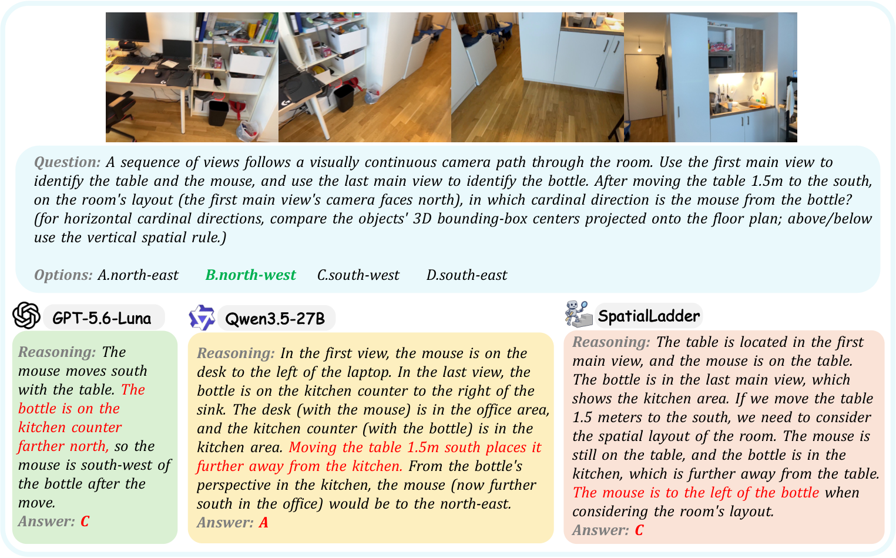
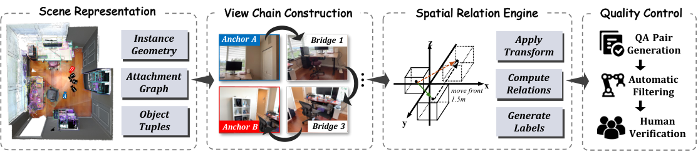
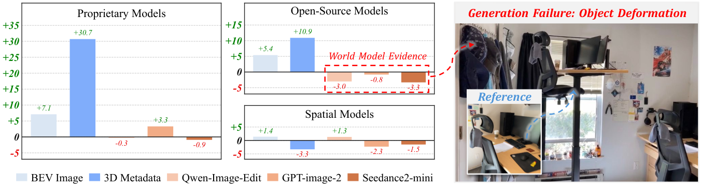

SpaceCast-Bench — 看到房间之后，能否推断它变了以后是什么样？
论文笔记: SpaceCast-Bench — 看到房间之后，能否推断它变了以后是什么样？
1. 背景信息与核心判断
作者来自浙江大学。本文按 arXiv:2610.12402v2，2026-10-16 阅读，首版发表于 2026-10-08；所读版本未标明会议录用信息。官方全文 · 作者代码 · 数据集。
SpaceCast-Bench 把空间问答推进到一个具体问题：只观察变化前的场景，能否在脑中更新对象位置，并回答变化后的关系？ 贡献主要是可控的数据构造与诊断评测，没有提出新的 VLM 架构。
读完最该留下四点：
- 输入视角被刻意安排成“各自只看见一组目标”，再用中间视图接起来，迫使模型整合分散的空间证据。
- 识别当前关系、更新局部对象、旋转整间房间是不同能力；三个任务等级不能直接理解为逐级变难。
- 显式几何信息带来的收益明显超过这组实验中的生成结果图像，提示“先恢复场景”是重要瓶颈，但尚不能据此定位内部机制。
- 对齐任务的监督训练很有效；换场景后的提升较大，换基准后的迁移较小且有反例。它证明了可学习性，尚未证明通用的物理预测能力。
2. 关键问题：桌子向南移动，鼠标就一定在瓶子的南边吗？
Golden Case：原文 Figure 13。
第一主视图里是桌子和鼠标，最后主视图里是厨房里的瓶子，中间几幅图连接房间中的这两个区域。第一视图的相机朝北。问题是：把桌子向南移动 1.5 米后，鼠标位于瓶子的哪个方位？ 正确选项是 B：西北。
困难不在识别鼠标，而在同时完成三件事：把不同视图里的对象放进同一布局；知道鼠标应随桌子移动；重新计算鼠标相对瓶子的方位。“向南移动”描述位移，不等于最终位于另一个对象南边。

来源：原文 Figure 13，Li et al.，CC BY 4.0。先看顶部连续视图，再看绿色正确选项与下面三段错误回答。GPT-5.6-Luna 明确写出鼠标随桌子向南移动，却仍把瓶子所在方位判断错。
这最后一点值得保留：图注将失败概括为模型忽略依附关系，但图中至少 GPT 的文字回答已经表达了共同移动。因此，此例支持多视角布局或关系重算失败，不能把每个错误都归为“没懂依附关系”；文字说对了某一步，也不能证明内部计算真的执行了它。
以当前图像关系为主要目标的评测，无法单独检验这条完整链。作者将目标称为 observe–transform–infer：观察、变换、推断。§2 也承认 MindCube、SpaMEM 等工作已涉及 what-if 或状态修改，因此本文更具体的增量是：真实室内扫描、多视角证据链、可控几何变换，以及按关系和参考系拆开的评测，不宜把“首次”扩大成此前没有任何预测性空间任务。
3. 关键方法：让生成器知道真实几何，让答题模型只看到变化前的图像
3.1 沿着鼠标案例走一遍数据流程
生成器从 RGB-D 扫描中取得相机位姿、深度、实例网格和对象语义，建立对象几何与 attachment graph（依附图）。图中父节点的移动会传给其全部后代；每个子节点至多有一个父节点，禁止成环。接触、支撑重叠或包含关系与语义兼容性用于提出依附边（§3.2、Appendix B.4）。
对应鼠标例：生成器选出桌子、鼠标和瓶子，找出分别识别它们的视角，用中间视图建立空间联系；在内部移动桌子及其依附对象，再由几何关系引擎计算正确答案。喂给 VLM 的仍是原始 RGB 图像序列、文字操作和选择题，不包括变化后的真实场景。
为便于理解，将这个例子的更新过程写成：
这是笔记者对原文流程的代数展开，不是论文报告的鼠标坐标。最终应将相对向量 $r'$ 投到世界坐标的地面方向区间，得到原例的西北；只看位移 $\Delta_{\rm south}$ 会答非所问。原文 §3.1 的一般形式是：
$S_0$ 是初始场景，$T$ 是文字指定的变换，$q$ 是空间查询；$y=q(S_1)$ 是这里补写的输出记法。模型要从图像推断足以回答问题的状态，再施加变换。这是一种任务分解，不是作者已验证的模型内部计算顺序，也没有要求模型显式输出三维重建。

来源：原文 Figure 2，Li et al.，CC BY 4.0。重点看视图链与关系引擎之间的分工：前者控制模型能看到什么，后者掌握变换后的几何并产生标签。图展示的是数据生成器。
3.2 为什么非要有“桥接视图”？
如果一张图同时出现鼠标和瓶子，模型可能直接用图像左右关系猜答案。作者把查询对象分为两组，选择两个 anchor views（主视图），要求各自主视图不能有效看见另一组目标；这不意味着整幅图没有共同背景。
随后连接两组对象的三维中心，构成一条线段形式的空间走廊。候选视图要通过投影与传感器深度核验，确实覆盖这条走廊的一部分；相邻视图在走廊上的覆盖区间至少重叠 10%，且向另一端推进。图搜索找到路径后删掉冗余视图，最多保留 6 张桥接视图，桥接图也不能把两组目标一起重新暴露出来（Appendix B.3）。
这里的 10% 是三维走廊覆盖区间的重叠，不是图像 IoU。它试图兼顾两件事：避免单图捷径，同时留出足够线索把两端放进同一坐标框架。16 类任务中有 13 类采用这一构造，共 3,328 道跨视角题；其余 3 类用单一主视图。
3.3 变换和答案都有精确定义
| 能力组 | 变化与查询 | 类别数 / 题数 |
|---|---|---|
| L1 静态感知 | 原场景中的三个参考系方向、距离、遮挡与依附结构 | 6 / 1,368 |
| L2 局部预测 | 对象平移、绕另一对象公转、移除后，重新计算方向、距离或遮挡 | 7 / 1,709 |
| L3 全局预测 | 整体布局围绕固定相机旋转后，计算三个参考系下的方向 | 3 / 785 |
表据 Table 5、Appendix B.2–B.5。几个容易读错、也会影响复现的约束：
- 对象旋转是公转：L2 的旋转绕固定中心进行，保留被移动对象自身朝向，不能按原地转身理解。L3 的相机位置与朝向不变；其 object-centric 模板还规定观察者保留原先的水平朝向（Tables 7–8）。
- 方向按几何算：对象中心的相对向量在地面上划为八个方向，另设上/下规则，再转入相机、对象或世界参考系。距离测的是最近表面距离，分界为 1.0、2.0、3.3 米，并去掉离分界不足 0.1 米的样本。
- 遮挡要重新射线检测：移除某物后仍需检查其余几何；“能看见一点”不等于“完全无遮挡”。依附题则要求选出全部后代，按选项集合完全匹配计分。
L1 中的依附题虽然也使用“如果移动”的措辞，其目标是读出既有依附结构；Appendix B.2 明确说三个等级表示状态变化范围。它们不是一个单变量难度阶梯。
4. 数据与评测口径：按任务等权，训练与测试场景分离
评测集来自 ScanNet、ScanNet++ 的 validation splits，共 182 个室内场景、3,862 道题；其中 ScanNet++ 占 3,144 道、48 个场景。训练池由同一流程从另外 54 个场景生成，含 12,249 道独立问题，没有与评测集共享场景 ID；按任务均衡重复后是 24,576 次训练呈现，不能把它当作独立题数（Appendix B.1、C.4）。
标签由几何程序产生，再做自动过滤和人工复核。10 位标注员参与质检，每题至少两人独立判断，分歧交给第三人；作者报告单选题两人一致率 98.9%、依附题集合一致率 91.8%。这降低了明显错误，但三维重建本身不精确时，遮挡与支撑关系仍可能有噪声（Appendix B.6、A）。
主指标是 16 个任务准确率的等权宏平均，L1/L2/L3 分别在本组任务内宏平均。因此总体分数既不是所有题直接求平均，也不是三个等级平均分再等权平均。方向与距离四选一、遮挡三选一、依附题多选；随机基线按各题规则抽样，不能统一当作 25%。
主实验统一使用简短 CoT 与确定性解码，Prompt 要求推理最多几句、最后一行输出 Answer: <single letter>；多选题列出所有字母。消融的 Direct 条件只要求答案（Appendix C.1、C.6）。论文没有借助很长的显式推理预算来完成主评测。
5. 关键结果：空间状态更新有缺口，但缺口不能只用一个总分解释
5.1 主榜单：局部更新尤其困难，空间专项模型并未占优
Table 1 共比较 21 个模型：9 个闭源、6 个通用开源权重模型、6 个空间专项模型。以下保留支撑结论的行，单位均为准确率百分比。
| 模型 / 基线 | Overall | L1 静态 | L2 局部 | L3 全局 |
|---|---|---|---|---|
| 人类 | 87.2 | 93.7 | 84.1 | 81.4 |
| 随机抽样 | 25.9 | 23.8 | 27.0 | 27.4 |
| Gemini 3.5 Flash | 58.0 | 67.1 | 45.3 | 69.4 |
| Qwen3.7-Plus | 55.3 | 63.8 | 43.2 | 66.6 |
| Qwen3.5-27B | 39.3 | 45.7 | 35.4 | 35.6 |
| Qwen3-VL-4B | 34.0 | 39.9 | 33.7 | 22.8 |
| SenseNova-SI-1.2 | 29.1 | 33.9 | 30.5 | 16.1 |
最强未针对本文训练的基线比人类低 29.2 个百分点，且从 L1 到 L2 下跌 21.8 点；六个空间专项模型的总体分数只有 25.7%–29.1%。这表明其已有训练未顺利迁移到本文任务，不能由跨模型比较推出“空间微调导致能力变差”，因为底座、规模、训练数据和输入适配没有被控制。
反过来看，Gemini 的 L3 比 L2 高很多，甚至高于它的 L1。L3 只有三个方向任务，L2 还混合了距离、遮挡和局部依附传播，不能把差异直接归为某个单独机制的难易。Table 3 还显示 Qwen3-VL-4B 的相机参考系平均为 39.3%，对象参考系为 16.2%；这提示参照系值得单独检查，尚不是定位某类神经表征的证据。
人类基线由另外 12 位志愿者使用模型可见输入完成，与质检标注员分开；87.2% 是任务宏平均，不是把正确题数 3,340 除以总题数得到的逐题准确率（Appendix C.2）。
5.2 什么额外信息真正有用？几何证据比这组生成结果更有效
作者对六个代表模型做配对诊断，每类模型取两个；以下结论不应扩展成所有 21 个模型的统一规律。
桥接图有用，但收益不等于证明已建立全局地图。 去掉桥接视图后，六模型平均的世界参考系方向准确率由 39.9% 降为 34.6%，相机、对象参考系分别下降 1.9、1.7 点（Figure 6）。这支持中间图携带有用的空间证据；没有同数量无关图、打乱顺序等对照，尚不能分离连续配准与单纯增加可用图像的作用。CoT 与 Direct 的比较则有正有负，并非稳定增强（Figure 5；正文此处误引为 Figure 6，按实际图注核对）。

来源：原文 Figure 7，Li et al.，CC BY 4.0。纵轴是相对基础输入的准确率变化（百分点）。应比较左侧几何证据柱与生成证据柱；右侧示例显示生成图中的参考对象发生了形变。
给出初态三维信息，比让模型多看一段生成未来更可靠。 添加初态鸟瞰图（BEV）时，闭源、通用开源和空间专项三组均值分别增加 7.1、5.4、1.4 点；改为文本三维元数据，则分别为 +30.7、+10.9、−3.3 点。这支持强通用模型能利用外部几何减轻观察阶段的困难，不能证明它们原先完全没有三维表示，也不能证明显式表示是唯一有效路线。元数据完整字段与编码协议在论文中交代不足 [?]，复现时需先落实这部分。
生成证据包括 Qwen-Image-Edit、GPT-image-2 的结果图和 Seedance2-mini 的视频。这里有一个关键前提：图像生成器已拿到利用变换后三维位置投影出来的目标 mask，视频又以 GPT-image-2 结果图作为终态参考；它们不是仅靠原始图片独立猜出未来（Appendix C.3、C.7）。因此实验测到的是这条受几何辅助的生成、再读图链能否帮助答题。
作者审核了 600 道局部干预题的生成终态。在六模型的错误回答中，Qwen-Image-Edit 条件下 80.3%、GPT-image-2 条件下 38.3% 与生成失败有关（§4.3）。这不是所有生成图像的失败率，也不是证明失败由图像生成单独导致。它更明确地暴露了两个环节：生成必须忠实保留几何，答题器还必须把结果图与原多视角证据对齐。
5.3 训练：大幅改善同分布新场景，域外收益是选择性的
训练底座是 Qwen3-VL-4B。Mixed SFT 混合全部任务；Staged SFT 先学 L1，再学 L2/L3，并回放 L1。SFT 冻结视觉编码器，训练语言模型所有线性层上的 rank-32 LoRA（alpha 64、dropout 0.05）及多模态对齐器，二者峰值学习率分别为 $10^{-4}$、$10^{-5}$；batch size 32，最大序列长度 8,192（§4.4、Appendix C.4）。
| Qwen3-VL-4B 训练方案 | Overall | L2 局部 | L3 全局 | 六个 OOD 基准均值 |
|---|---|---|---|---|
| 原模型 | 34.0 | 33.7 | 22.8 | 33.5 |
| Mixed SFT | 64.8 | 51.3 | 73.1 | 37.2 |
| Staged SFT | 65.7 | 54.0 | 70.8 | 38.1 |
| GRPO | 37.7 | 32.0 | 45.7 | 37.7 |
数据据 Table 4。分阶段 SFT 的总体提升是 31.7 个百分点，表明这套几何生成数据能教会模型跨场景完成任务。课程顺序的额外作用则小得多：相对 Mixed SFT，总体只高 0.9 点，局部任务高 2.7 点，全局任务反而低 2.3 点；没有多随机种子区间，不能把课程优势写成确定的普遍结论。
域外均值提高 4.6 点，其中 DSI-Bench 提升最大；但 MindCube 从 31.2% 降到 30.8%，Mixed SFT 更降到 29.1%。所以“在六个 OOD 上均有提升”不符合表格，准确说法是“六个基准的平均表现改善”。此外使用的是选定子集：MMSI 274、SPARTQA 250、MindCube 292、CLEVRER 600、VSI 150、DSI 1,769 题，并非六个完整测试集（Table 10）。
GRPO 的总体效果较弱，但不能据此干净比较 SFT 与 RL：GRPO 只训练 rank-16 的语言 LoRA，并冻结对齐器，训练自由度与 SFT 不同；它用每组 8 个输出、答案正确性加 0.1 权重的格式奖励。作者用奖励信号稀疏解释弱结果是合理假设，论文尚未用匹配参数与训练预算的实验排除其他原因。
6. Insights：最值得复用的是诊断设计，下一步应减少归因混杂
把鼠标案例拆成有真值的干预链。 原例中模型会说“鼠标随桌移动”，却仍答错；只读 CoT 很难知道坏在哪。可以对同一题依次提供正确初态坐标、正确共同移动对象集合、正确终态相对向量，再检查答案恢复到哪一步。若接到 Attention in Space 的候选头干预，就能进一步区分这些头影响跨视角整合、状态更新还是最终选项映射。这是笔记者提出的实验，不是本文已完成的机制定位。
把“会更新”与“该不变时不乱改”一起测。 预测题中 2,217 道关系改变，只有 277 道保持不变（Appendix B.2）。这提供了不变性样本，但总分容易掩盖两者差异。我会按原始关系、操作幅度和对象类别匹配这两组，单独报告更新正确率与不变关系保持率，并加入无关对象的变换；否则模型可能学到“题目说动了，答案就换一个”的偏好。
用未见模板和未见操作组合，检验训练到底教会了什么。 场景严格分离是优点，但训练和测试仍共用生成器；同基准收益远大于域外收益，提示规则或模板适配可能占了一部分。下一步应固定场景难度，留出某些参考系组合、动作组合或语言模板，再加一个直接读几何并计算关系的符号基线。这会比继续提高同一生成分布的总分，更能区分模型是否学到可组合的状态更新。
7. 复用入口与材料边界
作者 README 提供 evaluate.py 与 score.py：评测支持 CoT/Direct、OpenAI-compatible 或 Anthropic 接口，完整测试集才报告 macro_type_accuracy。本次核对了入口说明，没有运行推理、微调、计分或完整审计数据与代码实现。
阅读覆盖 v2 正文、Appendix A–D、关键图表和 Prompt；DeepXiv 返回 v1，因此最终事实以官方 v2 为准。所选三图分别承担失败案例、数据流程和外部证据对照，均保存为本地资产。
本文的外推边界尤其明确：全部来自室内扫描，标签依赖网格、相机位姿与语义标注；平移、旋转、移除是程序化几何变换，不模拟摩擦、形变和碰撞驱动的运动（Appendix A）。因此可以把它用于测试“跨视角条件下的几何状态更新”，不应由分数直接宣称机器人操作或真实物理预测能力。
- MOC-Multimodal-LLM-Reasoning — Topic：补充从多视角观察到未见干预结果推断的评测视角。